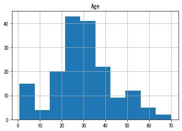
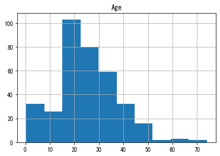
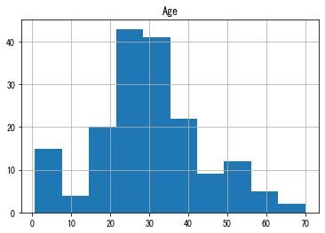
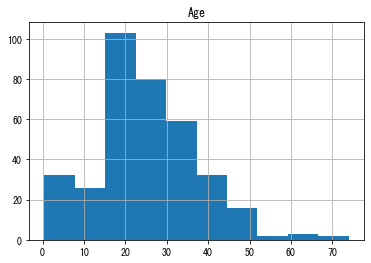
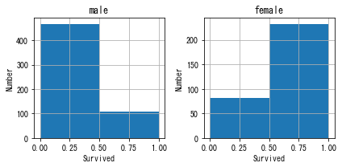
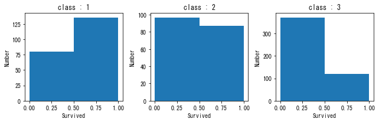

第12回b 数理工学実験２#
データ解析2#
14.3 タイタニック号の乗客データ#
from IPython.display import Image
Image(url='http://graphics8.nytimes.com/images/section/learning/general/onthisday/big/0415_big.gif')

import pandas as pd
import matplotlib
import matplotlib.pyplot as plt
%matplotlib inline
plt.rcParams['font.family'] = "MS Gothic"
CSVファイルの中身確認 （less: unix コマンド）
less train.csv
CSVファイルよりデータフレームへのデータ読み込み （ファイル:train.csv）
df = pd.read_csv("./train.csv" , header = 0 )
CSVファイルより読み込んだデータの確認
df
#df.head()
#df.tail()
| PassengerId | Survived | Pclass | Name | Sex | Age | SibSp | Parch | Ticket | Fare | Cabin | Embarked | |
|---|---|---|---|---|---|---|---|---|---|---|---|---|
| 0 | 1 | 0 | 3 | Braund, Mr. Owen Harris | male | 22.0 | 1 | 0 | A/5 21171 | 7.2500 | NaN | S |
| 1 | 2 | 1 | 1 | Cumings, Mrs. John Bradley (Florence Briggs Th... | female | 38.0 | 1 | 0 | PC 17599 | 71.2833 | C85 | C |
| 2 | 3 | 1 | 3 | Heikkinen, Miss. Laina | female | 26.0 | 0 | 0 | STON/O2. 3101282 | 7.9250 | NaN | S |
| 3 | 4 | 1 | 1 | Futrelle, Mrs. Jacques Heath (Lily May Peel) | female | 35.0 | 1 | 0 | 113803 | 53.1000 | C123 | S |
| 4 | 5 | 0 | 3 | Allen, Mr. William Henry | male | 35.0 | 0 | 0 | 373450 | 8.0500 | NaN | S |
| ... | ... | ... | ... | ... | ... | ... | ... | ... | ... | ... | ... | ... |
| 886 | 887 | 0 | 2 | Montvila, Rev. Juozas | male | 27.0 | 0 | 0 | 211536 | 13.0000 | NaN | S |
| 887 | 888 | 1 | 1 | Graham, Miss. Margaret Edith | female | 19.0 | 0 | 0 | 112053 | 30.0000 | B42 | S |
| 888 | 889 | 0 | 3 | Johnston, Miss. Catherine Helen "Carrie" | female | NaN | 1 | 2 | W./C. 6607 | 23.4500 | NaN | S |
| 889 | 890 | 1 | 1 | Behr, Mr. Karl Howell | male | 26.0 | 0 | 0 | 111369 | 30.0000 | C148 | C |
| 890 | 891 | 0 | 3 | Dooley, Mr. Patrick | male | 32.0 | 0 | 0 | 370376 | 7.7500 | NaN | Q |
891 rows × 12 columns
乗客の名前リスト （例. 年齢，生存の有無）
df[["Name"]]
df[["Name"]].head(10)
df[["Name"]].tail(10)
| Name | |
|---|---|
| 881 | Markun, Mr. Johann |
| 882 | Dahlberg, Miss. Gerda Ulrika |
| 883 | Banfield, Mr. Frederick James |
| 884 | Sutehall, Mr. Henry Jr |
| 885 | Rice, Mrs. William (Margaret Norton) |
| 886 | Montvila, Rev. Juozas |
| 887 | Graham, Miss. Margaret Edith |
| 888 | Johnston, Miss. Catherine Helen "Carrie" |
| 889 | Behr, Mr. Karl Howell |
| 890 | Dooley, Mr. Patrick |
df[["Name","Age"]]
| Name | Age | |
|---|---|---|
| 0 | Braund, Mr. Owen Harris | 22.0 |
| 1 | Cumings, Mrs. John Bradley (Florence Briggs Th... | 38.0 |
| 2 | Heikkinen, Miss. Laina | 26.0 |
| 3 | Futrelle, Mrs. Jacques Heath (Lily May Peel) | 35.0 |
| 4 | Allen, Mr. William Henry | 35.0 |
| ... | ... | ... |
| 886 | Montvila, Rev. Juozas | 27.0 |
| 887 | Graham, Miss. Margaret Edith | 19.0 |
| 888 | Johnston, Miss. Catherine Helen "Carrie" | NaN |
| 889 | Behr, Mr. Karl Howell | 26.0 |
| 890 | Dooley, Mr. Patrick | 32.0 |
891 rows × 2 columns
df[["Name","Age","Sex","Pclass","Survived"]]
| Name | Age | Sex | Pclass | Survived | |
|---|---|---|---|---|---|
| 0 | Braund, Mr. Owen Harris | 22.0 | male | 3 | 0 |
| 1 | Cumings, Mrs. John Bradley (Florence Briggs Th... | 38.0 | female | 1 | 1 |
| 2 | Heikkinen, Miss. Laina | 26.0 | female | 3 | 1 |
| 3 | Futrelle, Mrs. Jacques Heath (Lily May Peel) | 35.0 | female | 1 | 1 |
| 4 | Allen, Mr. William Henry | 35.0 | male | 3 | 0 |
| ... | ... | ... | ... | ... | ... |
| 886 | Montvila, Rev. Juozas | 27.0 | male | 2 | 0 |
| 887 | Graham, Miss. Margaret Edith | 19.0 | female | 1 | 1 |
| 888 | Johnston, Miss. Catherine Helen "Carrie" | NaN | female | 3 | 0 |
| 889 | Behr, Mr. Karl Howell | 26.0 | male | 1 | 1 |
| 890 | Dooley, Mr. Patrick | 32.0 | male | 3 | 0 |
891 rows × 5 columns
基本統計量の表示 （例. 年齢, チケット代）
df.describe()
| PassengerId | Survived | Pclass | Age | SibSp | Parch | Fare | |
|---|---|---|---|---|---|---|---|
| count | 891.000000 | 891.000000 | 891.000000 | 714.000000 | 891.000000 | 891.000000 | 891.000000 |
| mean | 446.000000 | 0.383838 | 2.308642 | 29.699118 | 0.523008 | 0.381594 | 32.204208 |
| std | 257.353842 | 0.486592 | 0.836071 | 14.526497 | 1.102743 | 0.806057 | 49.693429 |
| min | 1.000000 | 0.000000 | 1.000000 | 0.420000 | 0.000000 | 0.000000 | 0.000000 |
| 25% | 223.500000 | 0.000000 | 2.000000 | 20.125000 | 0.000000 | 0.000000 | 7.910400 |
| 50% | 446.000000 | 0.000000 | 3.000000 | 28.000000 | 0.000000 | 0.000000 | 14.454200 |
| 75% | 668.500000 | 1.000000 | 3.000000 | 38.000000 | 1.000000 | 0.000000 | 31.000000 |
| max | 891.000000 | 1.000000 | 3.000000 | 80.000000 | 8.000000 | 6.000000 | 512.329200 |
乗客の年齢分布
df.hist("Age")
df[df["Sex"]=="female"].hist("Age")
df[df["Sex"]=="male"].hist("Age")
df[df["Pclass"]==1].hist("Age")
df[df["Pclass"]==2].hist("Age")
df[df["Pclass"]==3].hist("Age")
array([[<AxesSubplot:title={'center':'Age'}>]], dtype=object)
 



print( "平均年齢 = {:}".format( df["Age"].mean() ) )
print( "平均年齢(女性) = {:}".format( df[df["Sex"]=="female"]["Age"].mean() ) )
print( "平均年齢(男性) = {:}".format( df[df["Sex"]=="male"]["Age"].mean() ) )
print( "平均年齢(1等船室) = {:}".format( df[df["Pclass"]==1]["Age"].mean() ) )
print( "平均年齢(2等船室) = {:}".format( df[df["Pclass"]==2]["Age"].mean() ) )
print( "平均年齢(3等船室) = {:}".format( df[df["Pclass"]==3]["Age"].mean() ) )
平均年齢 = 29.69911764705882
平均年齢(女性) = 27.915708812260537
平均年齢(男性) = 30.72664459161148
平均年齢(1等船室) = 38.233440860215055
平均年齢(2等船室) = 29.87763005780347
平均年齢(3等船室) = 25.14061971830986
チケット代の分布
df.hist("Fare")
df[df["Pclass"]==1].hist("Fare")
df[df["Pclass"]==2].hist("Fare")
df[df["Pclass"]==3].hist("Fare")
array([[<AxesSubplot:title={'center':'Fare'}>]], dtype=object)
df[(df["Pclass"]==1)&(df["Fare"]<10)]
| PassengerId | Survived | Pclass | Name | Sex | Age | SibSp | Parch | Ticket | Fare | Cabin | Embarked | |
|---|---|---|---|---|---|---|---|---|---|---|---|---|
| 263 | 264 | 0 | 1 | Harrison, Mr. William | male | 40.0 | 0 | 0 | 112059 | 0.0 | B94 | S |
| 633 | 634 | 0 | 1 | Parr, Mr. William Henry Marsh | male | NaN | 0 | 0 | 112052 | 0.0 | NaN | S |
| 806 | 807 | 0 | 1 | Andrews, Mr. Thomas Jr | male | 39.0 | 0 | 0 | 112050 | 0.0 | A36 | S |
| 815 | 816 | 0 | 1 | Fry, Mr. Richard | male | NaN | 0 | 0 | 112058 | 0.0 | B102 | S |
| 822 | 823 | 0 | 1 | Reuchlin, Jonkheer. John George | male | 38.0 | 0 | 0 | 19972 | 0.0 | NaN | S |
| 872 | 873 | 0 | 1 | Carlsson, Mr. Frans Olof | male | 33.0 | 0 | 0 | 695 | 5.0 | B51 B53 B55 | S |
print( "平均チケット代 = {:}".format( df["Fare"].mean() ) )
print( "平均チケット代(1等船室) = {:}".format( df[df["Pclass"]==1]["Fare"].mean() ) )
print( "平均チケット代(2等船室) = {:}".format( df[df["Pclass"]==2]["Fare"].mean() ) )
print( "平均チケット代(3等船室) = {:}".format( df[df["Pclass"]==3]["Fare"].mean() ) )
平均チケット代 = 32.204207968574636
平均チケット代(1等船室) = 84.1546875
平均チケット代(2等船室) = 20.662183152173913
平均チケット代(3等船室) = 13.675550101832993
生存者数/死亡者数
print( "生存者数 = {:}".format( len( df[df["Survived"]==1].index ) ) )
print( "死亡者数 = {:}".format( len( df[df["Survived"]==0].index ) ) )
生存者数 = 342
死亡者数 = 549
df["Survived"].plot(kind="hist",bins=2)
plt.xlabel("Survived")
plt.ylabel("Number")
Text(0, 0.5, 'Number')
男女別の生存者数/死亡者数
df["Survived"][df["Sex"]=="male"].plot(kind="hist",bins=2)
plt.title("male")
plt.xlabel("Survived")
plt.ylabel("Number")
Text(0, 0.5, 'Number')
df["Survived"][df["Sex"]=="female"].plot(kind="hist",bins=2)
plt.title("female")
plt.xlabel("Survived")
plt.ylabel("Number")
Text(0, 0.5, 'Number')
fig , axes = plt.subplots(nrows=1,ncols=2,figsize=(6,3))
i = 0
for sex in ["male","female"]:
df["Survived"][df["Sex"]==sex].hist(bins=2,ax=axes[i])
axes[i].set_title(sex)
axes[i].set_xlabel("Survived")
axes[i].set_ylabel("Number")
i+=1
fig.subplots_adjust(hspace=0.3)
fig.tight_layout()

年齢別の生存者数/死亡者数
plt.hist( [ df[df["Survived"]==0]["Age"] , df[df["Survived"]==1]["Age"] ]
, range = (1,80) , bins = 10 , stacked=True , label = ("Died","Survived"))
plt.legend()
plt.xlabel("Age")
plt.ylabel("Number")
Text(0, 0.5, 'Number')
plt.hist( [df[(df["Survived"]==0)&(df["Sex"]=="female")]["Age"] , df[(df["Survived"]==1)&(df["Sex"]=="female")]["Age"] ]
, range = (1,80) , bins = 10 , stacked=True , label = ("Died","Survived"))
plt.legend()
plt.xlabel("Age")
plt.ylabel("Number")
plt.title("female")
Text(0.5, 1.0, 'female')
plt.hist( [df[(df["Survived"]==0)&(df["Sex"]=="male")]["Age"] , df[(df["Survived"]==1)&(df["Sex"]=="male")]["Age"] ]
, range = (1,80) , bins = 10 , stacked=True , label = ("Died","Survived"))
plt.legend()
plt.xlabel("Age")
plt.ylabel("Number")
plt.title("male")
Text(0.5, 1.0, 'male')
船室毎の生存者数/死亡者数
df["Survived"][df["Pclass"]==1].plot(kind="hist",bins=2)
plt.title("1-st class")
plt.xlabel("Survived")
plt.ylabel("Number")
Text(0, 0.5, 'Number')
df["Survived"][df["Pclass"]==2].plot(kind="hist",bins=2)
plt.title("2-nd class")
plt.xlabel("Survived")
plt.ylabel("Number")
Text(0, 0.5, 'Number')
df["Survived"][df["Pclass"]==3].plot(kind="hist",bins=2)
plt.title("3-rd class")
plt.xlabel("Survived")
plt.ylabel("Number")
Text(0, 0.5, 'Number')
fig , axes = plt.subplots(nrows=1,ncols=3,figsize=(9,3))
i = 0
for pclass in [1,2,3]:
df[df["Pclass"]==pclass]["Survived"].plot(kind='hist',bins=2,ax=axes[i])
axes[i].set_title("class : " + str(pclass) )
axes[i].set_xlabel("Survived")
axes[i].set_ylabel("Number")
i+=1
fig.subplots_adjust(hspace=0.3)
fig.tight_layout()

レポート課題#
Kaggleから興味のあるデータを取得し，Pandasを用いてデータ解析を行いなさい．
今回はグラフの表示も見る必要があるので、プログラムとデータファイルをともに送ること。
他の人と異なるデータを用いデータ解析している場合に評価を高くします。
データ解析のポイント
異なる性質のデータ同士の関係から得られる知見を考えるようにする
データ数が多い物はヒストグラムを見ると良い（むしろヒストグラムを見られるデータがよい）
〆切：01/8（水）までにGoogle Classroomでjupyter notebook形式「id_学籍番号_12.ipynb」形式およびデータ（データ形式は様々だと思いますcsv, json, txtなどなど）を送ること）